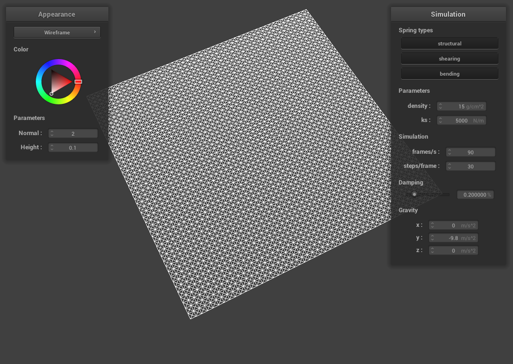

CS 184: Computer Graphics and Imaging, Spring 2023
Project 4: Cloth Simulator
Vincent Lee
Overview
I made a program that can render objects with different textures with physical simulations
Part 1: Masses and springs
Pinned 2
|
No shearing constraints
|
Only shearing constraints
|
|

All constraints
|
Part 2: Simulation via numerical integration
Simulation Parameters
ks
Ks causes the spring force to be stronger, which will pull the cloth together tigher. From the simulation, with lower ks the cloth seems to have more movement while it is hanging, while a higher ks has less. Another difference is that a higher ks holds up the top middle of the cloth higher than lower ks.
|
ks = 50000 N/m
|
ks = 500 N/m
|
density
A higher density increases the cloth’s mass which causes it to droop lower at higher densities
 density = 30 g/cm^2
density = 30 g/cm^2
|
density = 3 g/cm^2
|
damping
Lower damping values causes the cloth to fall faster. It also takes longer for it to go the final resting position.Small damping values causes the cloth to swing back and forth.
Pinned 4 with default params
Part 3: Handling collisions with other objects
cloth on sphere
|
$\text{ks} = 500$
|
Initial configuration ($\text{ks} = 5,000$)
|
 $\text{ks} = 50,000$
$\text{ks} = 50,000$
|
|
The lower ks value makes the cloth droop more over the sphere, while higher ks makes the cloth pull more towards the center of the cloth
Cloth at rest on plane
Part 4: Handling self-collisions
|
Self collision 1 (early)
|
Self collision 2
|
|
Self collision 3
|
Self collision 4 (rest)
|
|
ks/density comparison
|
$\text{density} = 3$
|
$\text{density} = 60$
|
|
$\text{ks} = 50$
|
$\text{ks} = 50000$
|
With higher ks values, the cloth folds on itself less as it falls, with lower ks the cloth has more folds. We can see that the cloth folds in on itself more at higher densities.
Part 5: Cloth Sim
Shader Program
A shader program is a program that sits outside of a program that takes in an input and transforms it into an output. It runs in parallel of the program on the GPU. This can be useful to do color or position calculations outside of the program. The vertex shader does position calculations and the fragment shader does color calculations. Both of these together allow you to calculate where and how pixels appear on the screen.
Blinn-Phong
In Blinn-Phong shading model, we calculate the color by taking the sum of three kinds of light, ambient, diffuse, and specular. With Blinn-Phong, we can also better account for things like shininess.
|
Ambient component only
|
Diffuse component only
|
 Specular component only
Specular component only
|
Complete Blinn-Phong model
|
Custom Texture
Pusheen
Show a screenshot of bump mapping on the cloth and on the sphere.
Show a screenshot of displacement mapping on the sphere.
Use the same texture for both renders.
You can either provide your own texture or use one of the ones in the textures directory,
BUT choose one that's not the default texture_2.png.
Compare the two approaches and resulting renders in your own words.
Compare how your the two shaders react to the sphere by changing the sphere mesh's coarseness by using -o 16 -a 16 and then -o 128 -a 128.
 Bump Mapping on the Cloth
Bump Mapping on the Cloth
|
 Bump Mapping on the Sphere
Bump Mapping on the Sphere
|
|
 Displacement Mapping on the Sphere
Displacement Mapping on the Sphere
|
 Displacement Mapping on the Sphere (coarser mesh)
Displacement Mapping on the Sphere (coarser mesh)
|
|
TODO
Mirror Shading
|
Mirror Shader on the Cloth
|
Mirror Shader on the Sphere
|
|